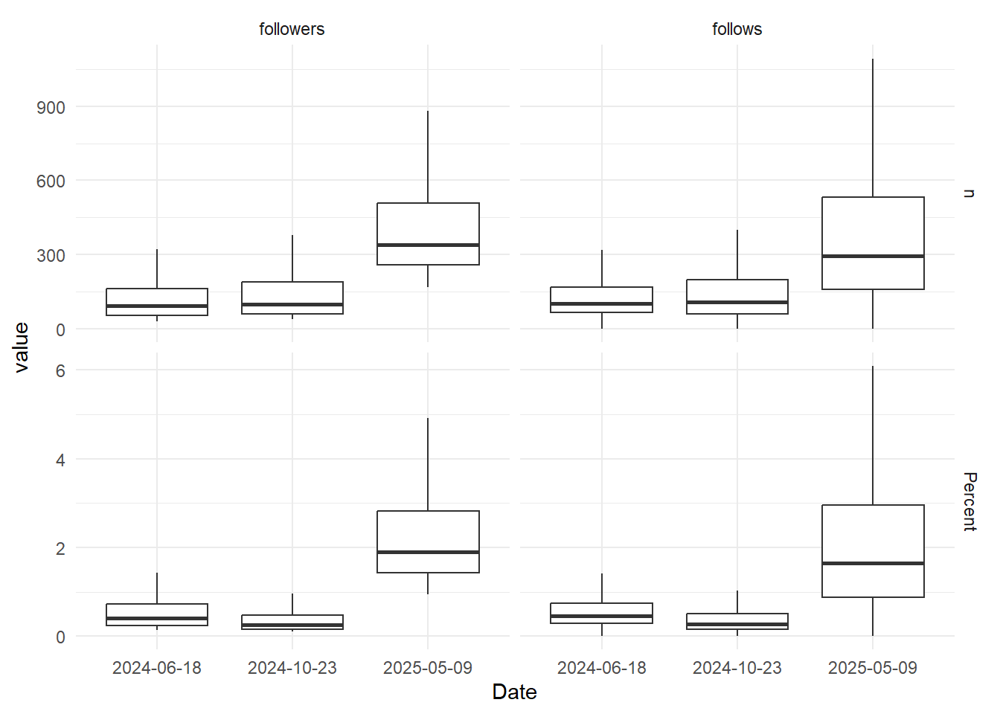

Most recent network: What changed?
What is this?
This is a quick look at the most recent network of scientists and researchers on Bluesky compared to earlier versions. Changes between versions may be due to either structural changes in the science and research community on Bluesky, or changes we have to make in the algorithm, as we go along.
Eventually, we aim the use the exact same algorithm every time to more accurately spot actual network changes, but it does take a bit of fine tuning before we get there.
Metrics
The table below shows a few basic metrics from the big science and researchers networks we collected at some point in time.
As we can see, the numbers of members in the latest network is considerably lower than earlier versions.
This is not because the community got smaller – on the contrary it grew to the point where we had to be more restrictive in defining the network border: Earlier we had an absolute threshold of 30, i.e. you needed 30 followers from within the network to be included. This time around we changed that to a relative threshold of 1 percent; you need to be followed by 1 percent of the network to be considered part of the network.
One percent of 17,980 is 180 followers, so clearly that is a significantly higher bar.
The reason for the change was both pragmatic and analytical: We had to be more restrictive or the algorithm would never finish. It may also make more sense with a relative threshold, since 100 followers is more significant in a network of 500 than in a network of 5,000. The percentage matter.
We see that the total number of edges (connections) is higher now that earlier. In other words: We have fewer members, but they follow more members.
The density of the network is the ratio of actual connections to the maximum possible connections. Naturally, that metrics is also up by quite a bit: The current network is much more densely connected than earlier versions.
The type network we construced is know as a directed graph (following someone is different from being followed). Loops are possible (you can follow yourself). So the maximum possible edges is just \(n^2\), where \(n\) is the number of members or nodes. The density, then, is \(\frac{e}{n^2}\) where \(e\) is the actual number of edges or connections in the graph.
Plot
Let’s plot the distribution of followers and follows, both in absolute counts and in relative terms:

We see basically the same thing; the denser network means members have a higher median number of followers and are also following more. Both in absolute and relative terms.